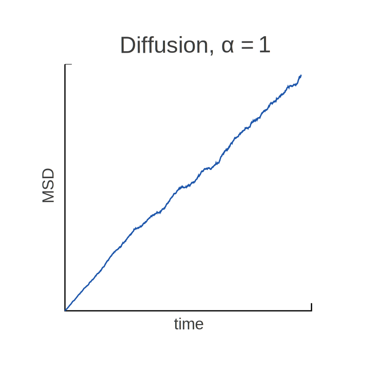
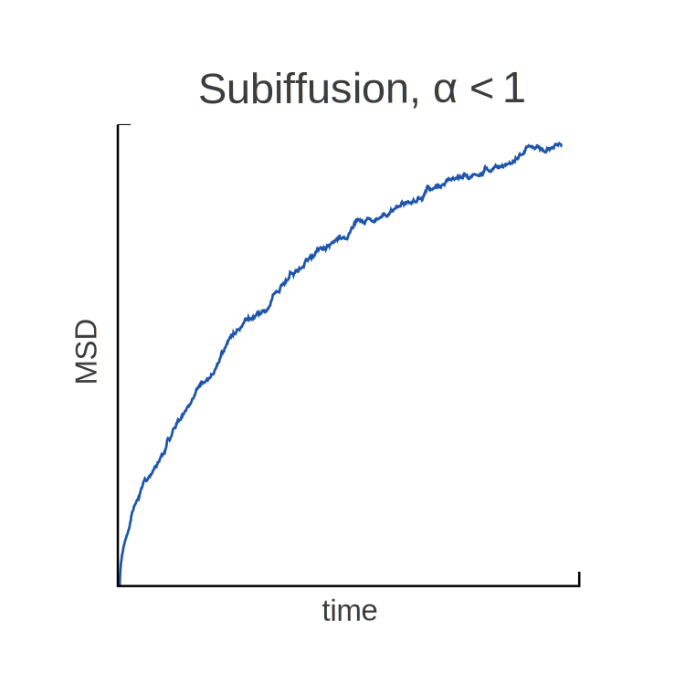

Seminar on the Maths of Randomness in Biology, Georg-August University Göttingen
2017/01/18
Appetizer: Anomal Diffusion
MMMMMMMMMMMMMMMM\(\langle x^2\rangle \sim {D}_\alpha t^\alpha\)
MMMMMMMMMMMi Diffusion MMMMMMM | Subdiffusion MMMMMM |
MMMMMMMMMMMii \(\alpha = 1\) | M \(\alpha < 1\) |
\( ~\)
\( ~\)
MMMMM The Tools: | Fractional Integrals and Derivatives |
MMMMMMMMMMMMM | |
MMMMM The Dynamics:M | Continuous-Time Random Walks (CTRWs) |
\( ~\) | |
MMMMM The Limit: | Fractional Fokker-Planck Equations (FFPEs) |
\( ~\)
\( ~\)
\( ~\)
\( ~\)
MMMMMMMMMM Fractional Integrals and Derivatives
Fractional Integrals and Derivatives
Who Would Think of "Fractional Derivatives"?!
\(~\)
Leibniz | "Can derivatives be generalized with non-integer orders?" |
L'Hospital | "What if the order is 1/2?" |
Leibniz | "An apparent paradox, from which one day useful consequences will be drawn." |
\(~\)
Fractional Integrals and Derivatives
Iterated Integration is the Key
Cauchy's formula for iterated integration
MMMM\(~ {}_aI^n f(x)\)
\(= \int_a^x dx_1 \int_a^{x_1} dx_2 \cdots \int_a^{x_{n-1}} dx_n \,f(x_n)\)
\(~\)
\(= \frac{1}{(n-1)!}\,\int_a^x (x - y)^{n-1} f(y) \, dy\)
\(~\)
Replace \(n \in \mathbb{N}\) with \(\alpha > 0\)
MMMM\(~ {}_aI^\alpha f(x)\)
\(:= \frac{1}{\Gamma(\alpha)}\int_a^x (x - y)^{\alpha-1} f(y) \, dy\)
with the Gamma function \(\quad\Gamma(\alpha) = \int_0^\infty e^{-x}x^{\alpha - 1} \,dx\)
Fractional Integrals and Derivatives
Fractional Derivatives
Define \(~ {}^{}_aD^{n-\alpha}_x f(x) = \frac{d^n}{dx^n}\, {}_aI^\alpha f(x)\), \(~ 0 \le \alpha < 1 ~\)
- Weyl (\(a = -\infty\))
- Riemann-Liouville (\(a = 0\))
\(~ {}^{}_0D^{n-\alpha}_x f(x)\)
\(= \frac{d^n}{dx^n}\, \int_0^x (x - y)^{\alpha-1} f(y)\, dy\)
\(~\)
Grünwald-Letnikov representation
\({}^{}_aD^{n-\alpha}_x f(x)\)
\(= \lim_{N\to\infty}\left[\left(\frac{N}{x -a}\right)^\alpha\sum_{j=0}^N \frac{(-1)^j\Gamma(\alpha + 1)}{\Gamma(\alpha - j + 1)j!}f\!\left(x - j \frac{x - a}{N}\right)\right]\)
Fractional Integrals and Derivatives
"Fractional Exponentials": Mittag-Leffler-Functions
Fractional analogon to exponentials: Mittag-Leffler functions
MMMMMMMMM\({E}_\alpha(y)\)
\(:= \sum_{k=0}^{\infty} \frac{y^k}{\Gamma(k\alpha + 1)}\)
\(~\)
The fractional differential equation
MMMMMMMMM\(-b\,\frac{d}{dx} f(x)\)
\(= \,{}^{}_0D^{1-\alpha}_x f(x)\)
is solved by
MMMMMMMMM\(f(x)\)
\(= {E}_\alpha(-x^\alpha / b)\)
Fractional Integrals and Derivatives
Nonlocal Dynamics -- How is this Physics?
\(~\)
Fractional time derivatives:
- dynamics with memory
- respects causality
\(~\)
Fractional spatial derivatives:
- fundamental problem: action at distance
- decoupling system from environment hard or impossible
- phenomenological models / non-inertial dynamics
\( ~\)
\( ~\)
\( ~\)
\( ~\)
MMMMMMMM Continuous-Time Random Walks (CTRWs)
Continuous-Time Random Walks
Definition
Look at random walker
Position
\( x(t) = \sum_{i}^{N(t)} y_i \)
Number of steps MM
\( N(t) ~\) until time \(~t\)
Single Jumps
\( y_i ~\) with pdf \(~\lambda(y)\)
Waiting times
\( \tau_i ~\) with pdf \(~\omega(\tau)\)
For CTRWs: \(~y_i, \tau_i ~\) independent
# Simulate CTRW with N steps waiting_times = draw_from_lambda(N) jumps = draw_from_omega(N) t = cumsum(waiting_times) x = cumsum(jumps)
Continuous-Time Random Walks
Should I Wait or Rather Fly?
Basic classification of CTRWs

MMM
\(~\langle y_i^2 \rangle\) MM
\(~\langle \tau_i \rangle\)
MMMMMMM e.g.
Normal diffusion M
\(< \infty\)
\(< \infty\)
MMM\(~\omega(t) \sim \exp(-t)~\,\) (exponential)
Subdiffusion
\(< \infty\)
\(= \infty\)
MMM\(~\omega(t) \sim t^{-1-\alpha}~\) Mi (power-law)
Levy Flights
\(= \infty\)
\(< \infty\)
MMM\(~\lambda(y) \sim \frac{1}{1 + y^2}~\) Mxl (Cauchy)
Continuous-Time Random Walks
Memory and Aging
CTRWs are usually not Markovian
- Markovian only if \(\tau_i\) exponentially distributed
- Then CTRW is a MCCT (Markov Chain in Continuous Time)
\(~\)
Non-exponential CTRWs memorize when they last jumped
- \(x(t)\) alone does not condition \(x(t+s)\), but \(x(t)\) + time waited already (renewal process)
- \( P(\tau_i > a + b \,|\, \tau_i > b) \neq P(\tau_i > a) \) \(~\Leftrightarrow~\) \(\tau_i\) not memoryless
- For subdiffusion: The jumping rates decline with time, as particles that already waited long are expected to wait even longer (aging)
Continuous-Time Random Walks
Properties
Properties for large \(t\) in the normal and subdiffusive case
M
normal MM
subdiffusive
Average jumps MM
\(\langle N(t)\rangle\)
\(t\)
\(t^\alpha\)
Jump rate
\(k(t) = \frac{d}{dt}\langle N(t)\rangle\)
const
\(t^{\alpha-1}\)
Spatial MSD
\(\langle x^2 \rangle = \langle y^2 \rangle \langle N(t) \rangle\) MM
\(t\)
\(t^\alpha\)
M
Temporal MSD
\(\overline{x^2}\)
\(t\)
\(t~ {}^{*}\)
Stationarity
yes
no
Ergodicity
yes
no
\({}^{*}\) Different constants of proportionality of different realizations
Continuous-Time Random Walks
Propagator
The general solution \(P(x, t)\) is best expressed in Fourier-Laplace space (\(k,s)\)
\(\qquad P(k, s) = \frac{1 - \omega(s)}{s} \frac{1}{1-\lambda(k)\omega(s)}\qquad\) Montroll-Weiss-Formula
\( ~\)
This is equivalent to
\( \!\!\!\!\!\partial_t P(x, t) = \partial_t\int_0^t dt'\, M(t - t') \int dx'\, P(x', t')\, [\lambda(x - x') - \delta(x - x')] \)
with memory kernel
\( \quad M(s) = \frac{\omega(s)}{1 - \omega(s)} \quad \Longleftrightarrow \quad M(t) \sim \begin{cases} t^{\alpha-1} \quad \text{if}~\omega(t) \sim t^{-\alpha - 1}\\ 1 ~~\,~~\quad \,\text{if}~\omega(t) \sim \exp(-t) \end{cases}\)
Continuous-Time Random Walks
Remarks
CTRWs are models to describe
- normal diffusion if \(\langle \tau_i \rangle < \infty\), \(\langle y_i^2 \rangle < \infty~~~\) (weak memory, CLT)
- subdiffusive behaviour if \(\langle \tau_i \rangle = \infty~~~\) (trapping mechanism, aging)
- Levi-flights if \(\langle y_i^2 \rangle = \infty~~~\) (spontaneous large jumps)
\( ~\)
CTRWs are not well suited to
- model interaction with external fields
- boundary value problems
\( ~\)
\( ~\)
\( ~\)
\( ~\)
MMMMMMMMM Fractional Fokker-Planck Equations (FFPEs)
Fractional Fokker-Planck Equations
From CTRWs to FFPEs
Approximate the density P(x', t') to second order, then the Montroll-Weiss formula in \((x, t)\) space becomes
\( \partial_t P(x, t) = \partial_t \,\int_0^t \,M(t - t')\,[A\,\partial_x P(x, t') + B\, \partial_x^2 P(x, t')] \)
\( ~\)
If \(\alpha = 1\) then \(M(t) = \text{const}\) and
\( \partial_t P(x, t) = A\,\partial_x P(x, t) + B\, \partial_x^2 P(x, t) \quad\qquad\qquad\) (FPE)
\( ~\)
If \(\alpha < 1\) then \(M(t) \sim t^{\alpha - 1}\) and
\( \partial_t P(x, t) = {}_0D^{1-\alpha}_t [A\,\partial_x P(x, t) + B\, \partial_x^2 P(x, t)] ,\qquad\) (FFPE)
Fractional Fokker-Planck Equations
General FFPEs
Under general physical conditions, the FFPE is given by
\( \qquad \qquad\partial_t P = {}_0D_t^{1 - \alpha}\,\left( \partial_x \frac{V'(x)}{m\eta_\alpha} + {K}_\alpha\partial^2_x\right)\,P \)
where
\(m\)
Particle mass
\(\eta_\alpha\)
Generalized friction constant
\({K}_\alpha\)
Generalized diffusion constant
\( ~ \)
Moments:
\( \qquad \frac{d}{dt} \langle x^n\rangle = {}_0{D}^\alpha_t \left( -\frac{n}{m\eta_\alpha}\,\langle x^{n-1}\,V'\rangle + n(n-1)\,{K}_\alpha\,\langle x^{n-2} \rangle \right) \)
Fractional Fokker-Planck Equations
Free and Harmonic Fractional Particles
\( ~ \)
Free particle (leads to Fractional Diffusion Equation, FDE)
\( \qquad \qquad\partial_t P = {K}_\alpha~ {}_0D_t^{1 - \alpha}\,\partial^2_x\,P \quad \Longrightarrow \quad \langle x^2 \rangle \sim {K}_\alpha t^\alpha \)
\( ~ \)
Harmonic Potential \( V(x) = m\omega^2x^2/2\)
\( \qquad \qquad \langle x \rangle = {E}_\alpha(- \omega^2 t^\alpha/\eta_\alpha) \)
\( \qquad \qquad \langle x^2 \rangle = {x}_\text{th}^2 + ( {x}_0^2 - {x}_\text{th}^2)\, {E}_\alpha(- 2 \omega^2 / \eta_\alpha t^\alpha) \)
with thermal equilibrium \( x^2_\text{th} = {k}_\text{B}T/ m\omega^2 \)
Fractional Fokker-Planck Equations
Stationary State and Generalized Einstein Relations
Similar to standard FPE, the stationary solution is
\(\qquad \qquad \qquad \qquad {P}_\text{st}(x) \sim \exp\left( - \frac{V(x)}{m \eta_\alpha {K}_\alpha} \right) \)
\( ~\)
Comparing with Bolzmann distribution reveals
\(\quad~~ \qquad {K}_\alpha = {k}_\text{B} T / m \eta_\alpha \qquad\) (generalized Einstein Relation)
\( ~\)
By a linear response approach, one can also show
\(\quad \qquad \langle x \rangle_F = \frac{1}{2} \frac{F}{{k}_\text{B}T} \langle x^2 \rangle\qquad\) (generalized second Einstein Relation)
for a constant force \(F\)
Conclusion
This week:
- CTRWs are versatile mathematical models to describe anomal diffusion
- Remarkable features: Aging, non-stationary, non-ergodic for \(\alpha < 1\)
- There is a close relation between CTRWs and FFPEs
- For the FFPE similar properties to the original FPE can be derived
\( ~ \)
Next week:
- Other models to describe subdiffusion, with different properties
- Methods of how to distinguish between different Mechanism driving anomal diffusion
\( ~ \)
\( ~ \)
\( ~ \)
Klafter, Sokolov | First Steps in Random Walks: From Tools to Applications (2011) |
Metzler, Klafter | The Random Walk's Guide to Anomalous Diffusion: A Fractional Dynamics Approach (2000) |
\( ~ \) | |
Barkai, Metzler, Klafter | From Continuous Time Random Walks to The Fractional Fokker-Planck Equation (2000) |
Meroz, Sokolov | A Toolbox for Determining subdiffusive Mechanisms (2015) |
Magdziarz, Weron | Fractional Brownian Motion versus the Continuous Time Random Walk: A Simple Test for Subdiffusive Dynamics (2009) |
Hilfer | Threefold Introuduction to Fractional Derivatives (2008) |
Metzler, Jae-Hyung, Cherstvy, Barkai | Anomalous Diffusion Models and their Properties: Non-Stationarity, Non-Ergodicity, and Ageing at the Centenary of Single Particle Tracking (2014) |
| Space | Forward |
|---|---|
| Right, Down, Page Down | Next slide |
| Left, Up, Page Up | Previous slide |
| P | Open presenter console |
| H | Toggle this help |